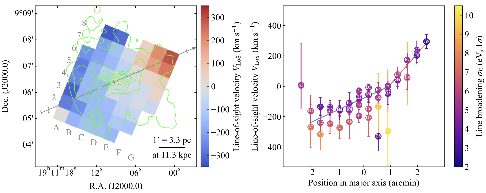
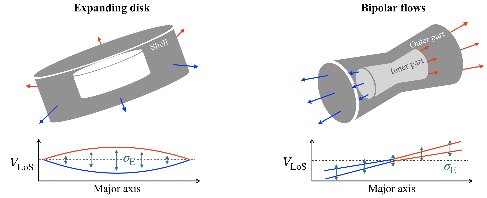
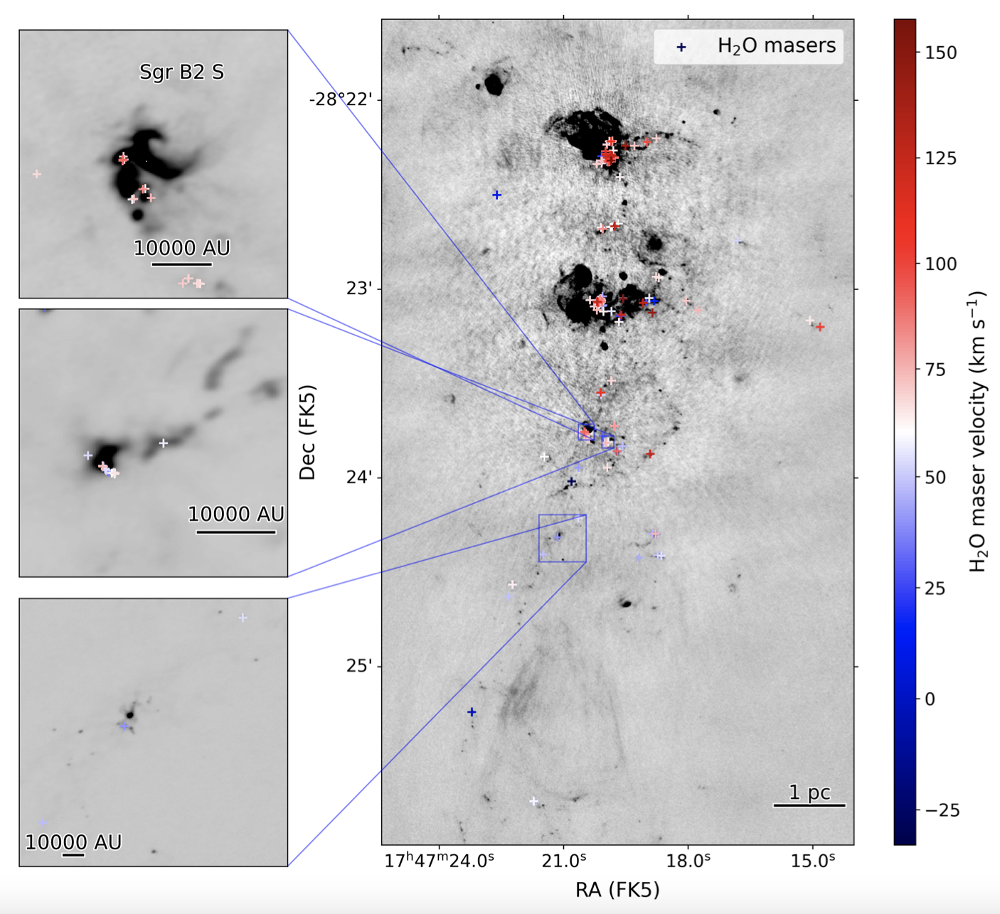
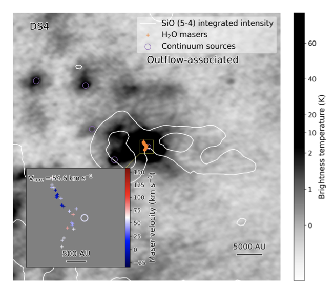
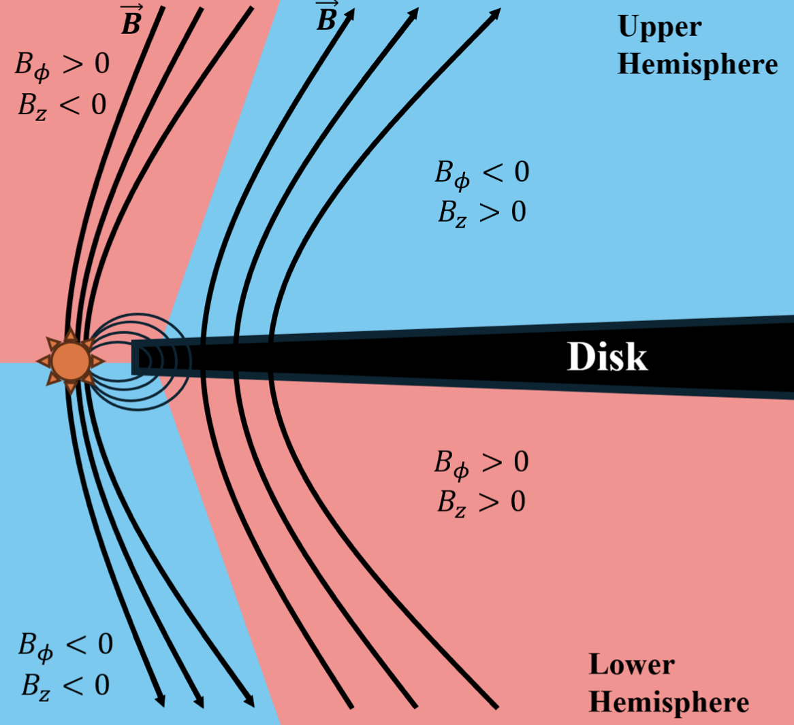
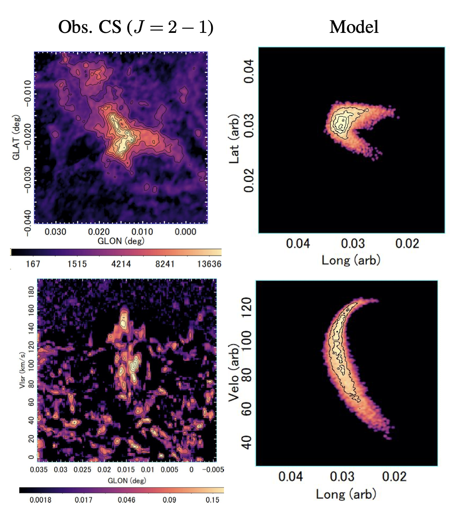
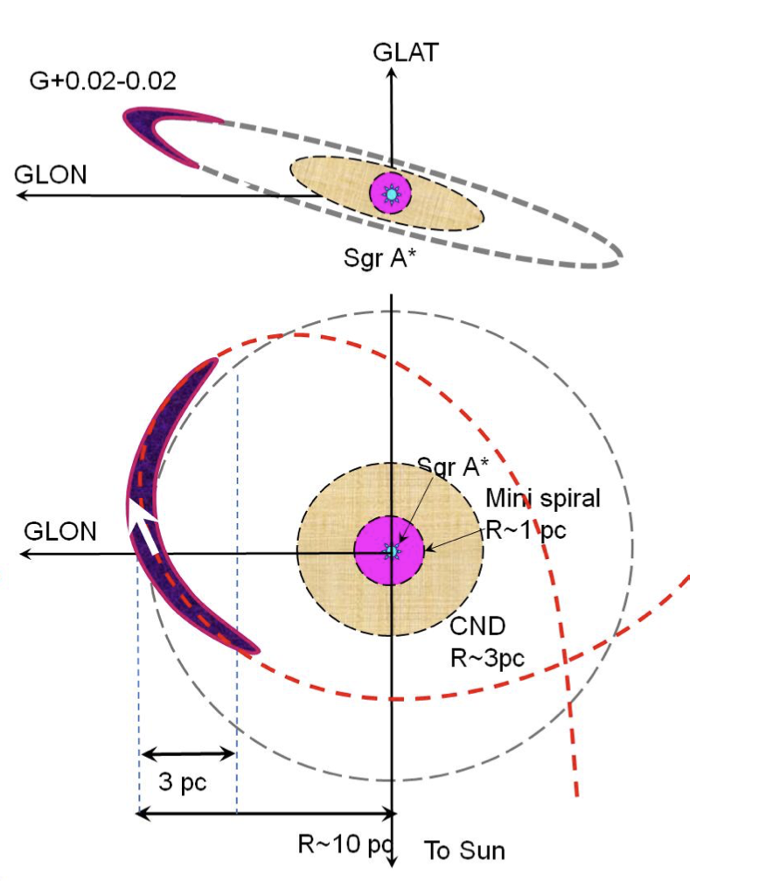

I take notes on ArXiv articles that pique my personal interest, just in case I forget.
This file was originally written in markdown.
SNR/W49BKinematic Evidence for Bipolar Ejecta Flows in the Galactic SNR W 49B (2506.05455)
XRISM Collaboration
Tags:
SNR
X-Ray
W49B, a unique Galactic SNR with centrally peaked, “bar”-like ejecta distribution, which was once considered evidence for a hypernova origin that resulted in a bipolar ejection of the stellar core. However, chemical abundance measurements contradict this interpretation. The morphology and velocity distribution of the ejecta provide critical details for understanding the explosion mechanism.
Using XRISM/Resolve, they measured the line-of-sight velocity
traced by the Fe Heα emission to vary by ±300 km/s with a smooth east-to-west gradient of a few tens of km/s/pc along the major axis.
The discovery of the east-west gradient in the line-of-sight velocity, together with the absence of a twin-peaked line profile or enhanced broadening in the central region, clearly rejects the equatorially expanding disk model. They propose an alternative scenario that would be a collimation of the ejecta by an elongated cavity sculpted by bipolar stellar winds.


[Back to top]
Sgr B2/water maserProperties of H2O masers and their associated sources in Sagittarius B2 (2506.09115)
Nazar Budaiev, Adam Ginsburg, Ciriaco Goddi, Álvaro Sánchez-Monge, Anika Schmiedeke, Desmond Jeff, Peter Schilke, Christopher De Pree
Tags:
H2O maser
Sgr B2
Sgr B2, known for its high star-formation rate (∼0.04 M⊙ yr−1, 10% of the star formation in the CMZ; Ginsburg et al. 2018), whose extreme environmental conditions and clustered star formation makes it a compelling analog for star formation at during the peak epoch of cosmic star formation (z ∼ 2; Madau & Dickinson 2014).
High-resolution multi-wavelength observations resolve the immediate environments of individual massive protostars, and feedback, infall, and dynamical interactions within the forming star clusters, thereby providing crucial context for the physical interpretation of maser emission.
They detected 499 H2O masers in observed velocities (-39 to 172 km/s) and identified 144 unique sites of H2O maser emission.
The outflow-associated H2O maser emission is confined to within < 2000 au of the central continuum source, while shocked SiO emission extending over tens of thousands of au.


[Back to top]
C+N abundance/YSO jets/ACES-GCC and N abundances in globular clusters. I. The case of 47 Tuc and the effect of the first dredge-up.
Implications for the isochrone fitting (2506.11278)
S. Villanova, L. Monaco, Y. Momany, A. Plotnikova, and I. Ordenes
Tags:
C+N abundance
47 Tuc
1st dredge-up
Aims: they investigate chemical variations in the globular cluster NGC104 (47Tucanae), to trace multiple stellar populations across evolutionary phases and examine how the C/N anti-correlation evolves from the main sequence (MS) to the asymptotic giant branch (AGB).
Methods: analysing [C/Fe] and [N/Fe] abundances from spectra for a large stellar sample covering all evolutionary stages.
CN and the CH features → abundance; photometry → atmospheric parameters
The inferred abundances → disentangle multiple populations along the CMD and refine cluster parameters.
Results: they find that MS stars are more C- and N-rich than their RGB, HB, and AGB counterparts. The C/N anti-correlation shifts during the sub-giant branch phase, coinciding with the first dredge-up: C decreases by 0.15-0.20 dex, N by ∼0.1 dex, while Fe remains unchanged.
YSO Jets Driven by Magnetic Pressure Generated through Stellar Magnetosphere–Disk Interaction (2506.11333)
Yisheng Tu, Zhi-Yun Li, Zhaohuan Zhu, Xiao Hu, and Chun-Yen Hsu
Tags:
YSO
Jet
Stellar magnetospheres
Circumstellar disks
They present a 3D non-ideal magnetohydrodynamic simulation of jet launching in YSOs, focusing on the interaction between the stellar magnetosphere and the circumstellar disk.
Magnetosphere Opening:
At simulation start, the magnetosphere partially opens, forming two oppositely directed magnetic field regions: One threading the star; One threading the inner disk
The disk-threading field dominates at small radii and contributes launch a disk wind.
Jet Launching Mechanism: Jet is launched from the interface between these regions by toroidal magnetic pressure generated along “two-legged” field lines, anchored at a magnetically dominated stellar footpoint and a mass-dominated point on the disk surface.
Outflows driven via "Load-Fire-Reload Cycle":
Load: Differential rotation builds up toroidal magnetic fields.
Fire: Vertical toroidal field gradients drive outflows and release energy.
Reload: Magnetic reconnection resets the field configuration.
This cycle is rapid and asynchronous across azimuths, sustaining a continuous, large-scale outflow.
Energy Transport: Poynting flux transports the toroidal field from the vicinity of the star into the polar cavity, powering the jet.

Circum-nuclear eccentric gas flow in the Galactic Center re-
vealed by ALMA CMZ Exploration Survey (ACES) (2506.11553)
Yoshiaki SOFUE, Tomoharu OKA, Steven N. LONGMORE, Daniel WALKER, Adam GINSBURG et al.
Tags:
GC
ACES
A high-velocity compact cloud (HVCC) at (l,b,vLSR) ∼ (+0.02deg , −0.02 deg, 100 km/s) (hereafter G0.02). The longitude-velocity diagram (LVD) of the cloud draws an elliptical structure, which is interpreted as an orbital trajectory in the (l,vLSR) space of a noncircular (eccentric) motion of the molecular gas in the gravitational potential of an extended mass distribution in the central 10 pc of the Galaxy. They argue that G0.02 is a kinematic tracer of the inner potential, a rare case of a dense gas following an eccentric orbit in the nuclear gravitational field.
 